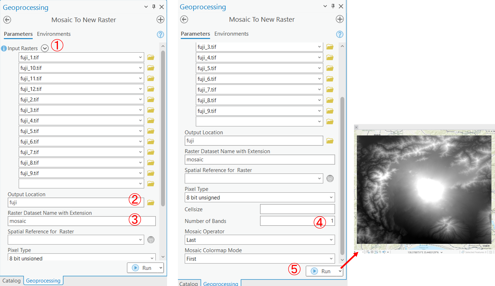
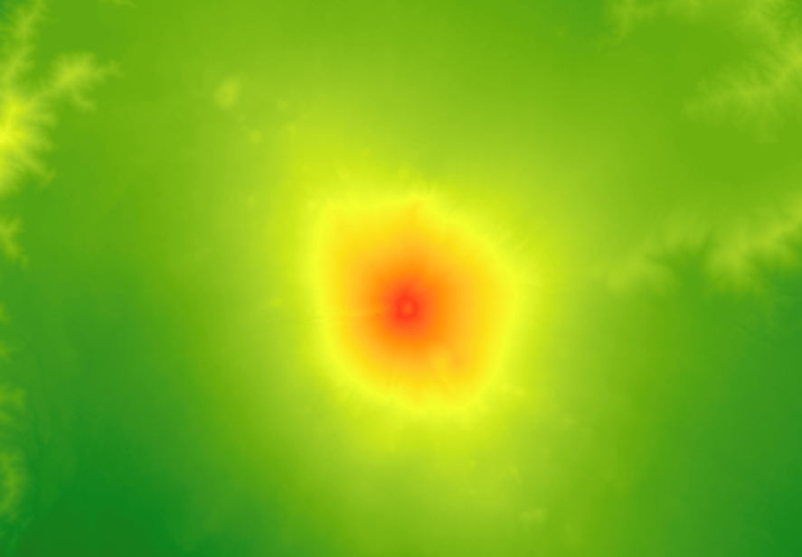
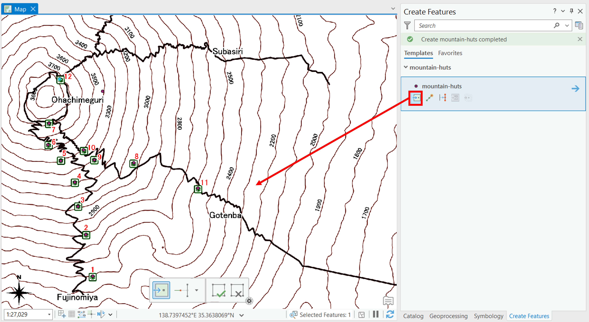

空間データの作成
GISで用いられるラスタデータの統合と、ベクタデータの作成手法について解説しています。
Menu
実習用データ
実習をはじめる前に、fujiをダウンロードしてください。
ラスタのモザイクとクリップ
以下では、ラスタデータ(ここでは、DEMを使用)の結合と任意範囲での切り抜きの解説する。DEMは、Digital Elevation Modelの略であり、各セルごとに標高値を保持しているデータです。以下に従って、ダウンロードしたデータから任意の地域のデータを結合し、切り出していく。次に、ラスタのセル値を用いて、等高線を抽出する。
ラスタのモザイク
ArcGIS Proにfuji_trails.tif以外のtifファイルを読み込む。

Analysis > Tools > Mosaic To New Rasterを選択する。

以下の手順で複数のファイルを一つのラスタデータにする。 
Input Rastersの横の（＞）のマークをクリックし、fuji_1.tif~fuji_12.tifを選択する。- データを書き出すフォルダを指定する
- データ名を指定する
Number of Bandsを1とするRunを実行すると、結果が出力される
ラスタの座標変換
Analysis > Tools > Project Rasterを選択し、マージしたラスタデータを地理座標系から、平面直角座標系(JGD2011 zone 8)に変換する。


- ラスタを指定する
- 出力ファイル名を指定する
- 地球儀マークを選択する
JGD 2011 Japan Zone 8Bilinear Interpolation(共1次内挿法)を選択するRunを実行する- マップウィンドウの地図の座標も
JGD 2011 Japan Zone 8にする
ラスタのクリップ
Analysis > Tools > Clip Rasterを選択し、必要な範囲のデータを抽出する。


- ラスタを指定する
- 鉛筆マークをクリックし、
Polygonを選択する - を選択して、地図上で範囲を指定する
NoData Valueを0とするRunを実行する
ラスタの配色(値の分類)
以下では、抽出したデータの配色について解説する。DEMは、ラスタのセルごとに標高値を保持しているため、標高値による色分けができる。色分けは、以下の手順で行う。
- 色を選択する
- Stretch typeを
Minimum Maximum(最小値ー最大値)を選択する Advanced Labelingを選択し、今回はIntervalを４にする- インターバルの値を調整する
Applyを実行する
この分類では、以下のような地図になる。 
等高線の抽出
作成したラスタデータは、各セルごとに標高値を保持している。そのため、セルの値を補間、等高線を作成することができる。Analysis > Tools > Contourを選択する。


- ラスタデータを指定
- 出力ファイルを指定
- 今回は、50 mの間隔で等高線を作成する
Runを実行すると等高線が出力される
ここまでの内容を地図としてレイアウトし、画像を出力する。
新規ベクターレイヤの追加
GISでは、データを自作をすることができる。以下では、富士山の山小屋（ポイント）、登山道（ライン）、火口（ポリゴン）のデータの作成を通じて、新規にベクトルデータを作成する手法を解説する。以下をはじめる前に、富士山登山同図（fuji_trails.tif）をGISで読み込む。
ポイントデータの作成と保存
以下では、富士山の山小屋のポイントを作成していく。背景図が読み込みが完了したら、カタログを開き、フォルダー内で右クリックし、New > Shapefileを選択する。

- 出力先フォルダを指定
- レイヤ名を指定
- Geometry Typeを
Pointにする（ポイントデータを作成するため） - 座標系を指定する
Runを実行するとContentsウィンドウに空のポイントデータが出力される
作成したベクタデータをContentsウィンドウで選択し、Edit > Createをクリックする。
Create Featuresから編集するレイヤを選択し、ポイントを追加するアイコンをクリックする。次に、背景地図を参考に山小屋のポイントを地図上に作成する。 
追加が完了したら、Finishアイコンをクリックし、Saveをクリックする。作成したポイントを修正したいときは、Modifyのアイコンをクリックし、作業する。ポイントを削除するときは、ポイントをSelectツールで選択して、Deleteを実行する。
ラインデータの作成
ポイントデータを作成する要領で、ラインデータを作成する。Polylineを選択し、空のレイヤを作成した後、登山道を何度もクリックしてなぞるようにラインデータを作成する。最後の点で右クリックをするとダイアログが表示されるため、Finishをクリックする。

２本目の線からは、Snappingをオンにして線の頂点が重ならうようにする。すべての登山道が作成できたら、Saveをクリックする。

ポリゴンデータの作成
ラインデータを作成する要領で、火口のふちを何度もクリックしてなぞるようにポリゴンデータを作成する。Polygonを選択し、空のレイヤを作成する。最後の点で右クリックをするとダイアログが表示されるため、Finishをクリックする。

ここまでの内容を地図としてレイアウトし、画像を出力する。
課題
この実習では、ラスタデータのクリップと新規ベクトルデータの作成を行います。完成例のような地図を作成してください。ポイントデータは完成例、不忍池のポリゴンやルートのラインは、地理院タイルの空中写真をトレースして作成してください。※完成例にある地名、標高点などデータのラベルは不要です。等高線の間隔は5mまたは10mとする。
実習用データ
本実習を始める前に、tokyoをダウンロードしてください。本実習では、tokyo_srtm.tiffのみを使用します。
完成例